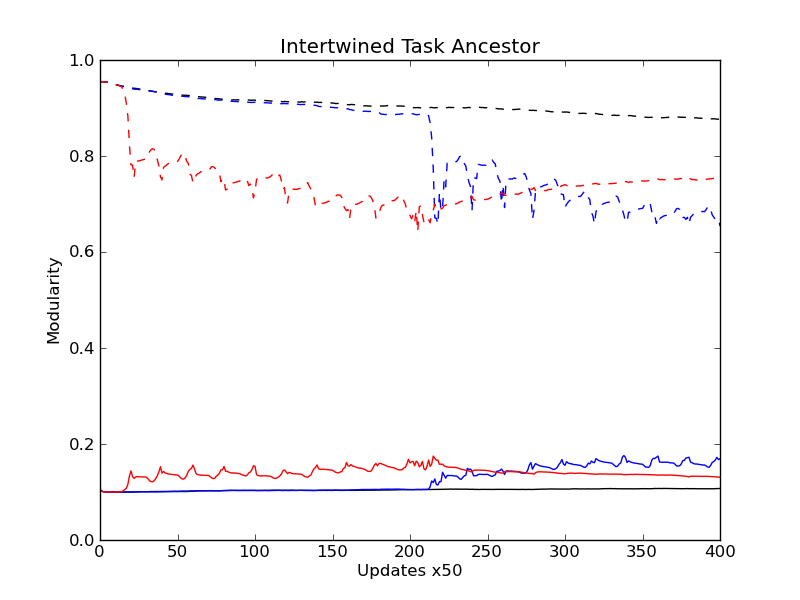
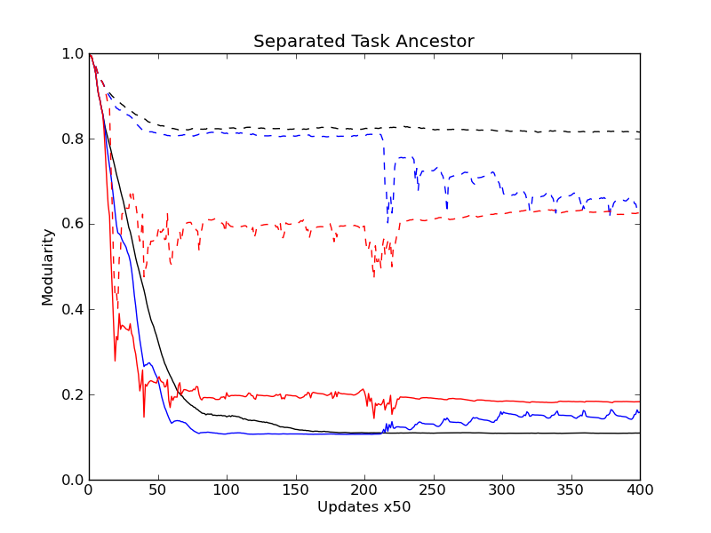

STATUS:
LOG:
STATUS:
rosiec@atlantis:~/research/Devolab Research/evolution_of_modularity/raw_data/062$ for i in *_??????; do echo $i; cd $i/data/; for j in two_task*.dat*; do python ../../../../../scripts/evolution_of_modularity_pipelines/calculate_physical_modularity.py 11 12 16 17 $j > physical_modularity__$j; done; cd ../../; done;
LOG:
rosiec@atlantis:~/research/Devolab Research/evolution_of_modularity/raw_data/062$ for i in *_??????; do echo $i; cd $i/data/; rm two_task_physical_modularity__stats.csv ;python ../../../../../scripts/common\ modules\ and\ helper\ scripts/extract_single_column_to_csv.py -c 1 physical*-?.dat* physical*-??.dat* physical*- ???.dat* physical*-????.dat* physical*-?????.dat* >> two_task_physical_modularity__stats.csv; cd ../../; done
rosiec@atlantis:~/research/Devolab Research/evolution_of_modularity/raw_data/062$ rm punish_first_separated__physical_modularity.csv; for i in p*_s*_??????; do cd $i/data/; python ../../../../../scripts/common\ modules\ and\ helper\ scripts/extract_single_column_to_csv.py --dimensionality 1 -s "," 1 two_task_physical_modularity__stats.csv >> ../../punish_first_separated__physical_modularity.csv; cd ../../; done rm noreward_first_separated__physical_modularity.csv; for i in n*_s*_??????; do cd $i/data/; python ../../../../../scripts/common\ modules\ and\ helper\ scripts/extract_single_column_to_csv.py --dimensionality 1 -s "," 1 two_task_physical_modularity__stats.csv >> ../../noreward_first_separated__physical_modularity.csv; cd ../../; done rm control_separated__physical_modularity.csv; for i in c*_s*_??????; do cd $i/data/; python ../../../../../scripts/common\ modules\ and\ helper\ scripts/extract_single_column_to_csv.py --dimensionality 1 -s "," 1 two_task_physical_modularity__stats.csv >> ../../control_separated__physical_modularity.csv; cd ../../; done rm control_intertwined__physical_modularity.csv; for i in c*_i*_??????; do cd $i/data/; python ../../../../../scripts/common\ modules\ and\ helper\ scripts/extract_single_column_to_csv.py --dimensionality 1 -s "," 1 two_task_physical_modularity__stats.csv >> ../../control_intertwined__physical_modularity.csv; cd ../../; done rm noreward_first_intertwined__physical_modularity.csv; for i in n*_i*_??????; do cd $i/data/; python ../../../../../scripts/common\ modules\ and\ helper\ scripts/extract_single_column_to_csv.py --dimensionality 1 -s "," 1 two_task_physical_modularity__stats.csv >> ../../noreward_first_intertwined__physical_modularity.csv; cd ../../; done rm punish_first_intertwined__physical_modularity.csv; for i in p*_i*_??????; do cd $i/data/; python ../../../../../scripts/common\ modules\ and\ helper\ scripts/extract_single_column_to_csv.py --dimensionality 1 -s "," 1 two_task_physical_modularity__stats.csv >> ../../punish_first_intertwined__physical_modularity.csv; cd ../../; done
rosiec@malp:/Volumes/Atlantis/research/Devolab Research/evolution_of_modularity/raw_data/062$ python ../../../scripts/generate_graphs_from_raw_data/plot_from_csv.py -e -o -t "Separated Task Ancestor" -x "Updates x50" -y "Modularity" comparitive_physical_functional_modularity__separated__two_task.png control_s*__functional_modularity.csv control_s*__physical_modularity.csv noreward_first_s*__functional_modularity.csv noreward_first_s*__physical_modularity.csv punish_first_s*__functional_modularity.csv punish_first_s*__physical_modularity.csv python ../../../scripts/generate_graphs_from_raw_data/plot_from_csv.py -e -o -t "Intertwined Task Ancestor" -x "Updates x50" -y "Modularity" comparitive_physical_functional_modularity__intertwined__two_task.png control_intertwined__functional_modularity.csv control_intertwined__physical_modularity.csv noreward_first_intertwined__functional_modularity.csv noreward_first_intertwined__physical_modularity.csv punish_first_intertwined__functional_modularity.csv punish_first_intertwined__physical_modularity.csv

ANALYSIS:
STATUS EMAIL TO CHARLES:
Last week: I was testing whether the modularity differences per treatment were contingent upon the prior conditions. I performed a set of runs with separated and intertwined task (XOR and EQU) seed organisms, and ran treatments that switched from punish to no-reward half way through the run (and vice versa). From these runs, I collected the functional modularity measure (overlap) and physical modularity (scatter) of those organisms that did both tasks. I hoped that this would show whether the functional modularity "basement" would rise and fall depending on the treatment.
Attached are two graphs which show that the functional modularity basement level definitely rises immediately when exposed to punishment, but doesn't drop again very quickly when returned to no-reward. This correlates perfectly with the physical modularity measure, which shows a quick increase in scatter (decrease in physical modularity), and that this scatter stays pretty constant or drops slowly when the treatment is switched to no-reward.
No legends are included in the graphs, as they would completely obscure the top part of the graphs.
Interpreting the graphs:
- Solid lines are functional modularity – 1 means perfect separation. 0 means perfect overlap.
- Dashed lines are physical modularity, ratio of task instruction count to task positional length – 1 means no scatter (count == length). 0 means infinite scatter.
- Black is control, blue is no-reward first, switching to punishment, and red is punishment first, switching to no-reward.
I think it's fairly obvious that once scatter happens, it is hard to get rid of. I want to run some longer runs and see if the measures eventually return to pre-punishment levels if given enough time.
This week:
It's pretty clear that the scatter initially occurs due to the re-evolution of tasks in the punishment scenario. However, I want to test whether the scatter is hard to get rid of because it is being actively maintained (hypothesis 1), or whether it's just hard to back out of that type of architecture (hypothesis 2). My first thought for hypothesis 1 was a set of tournament experiments to see whether ancestors with scattered genomes more easily evolve new tasks or not. For hypothesis 2, I wanted to see how long it takes for a scattered genome to compact under control and no-reward conditions. Other ideas for testing these hypotheses are welcome.
Finally, I want to test whether fluctuating environments help adaptations happen more quickly (as hinted at by the faster drop to the functional modularity basement in no-reward and punishment treatments vs control). Specifically, I want to find out whether the enforced fitness valleys of the no-reward and punishment environments help level the playing field when you have to rearrange your genome (which is potentially very costly to fitness).
-rose
THOUGHTS:
LAB MTG NOTES/THOUGHTS: